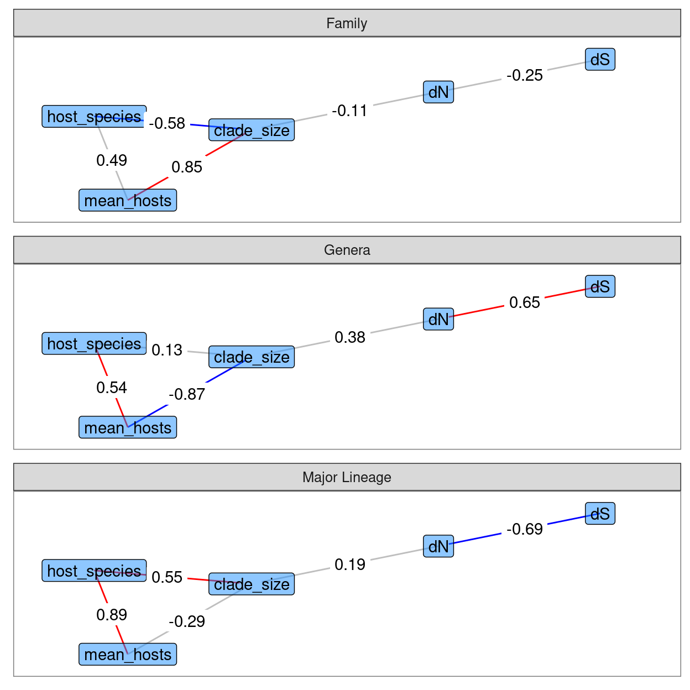
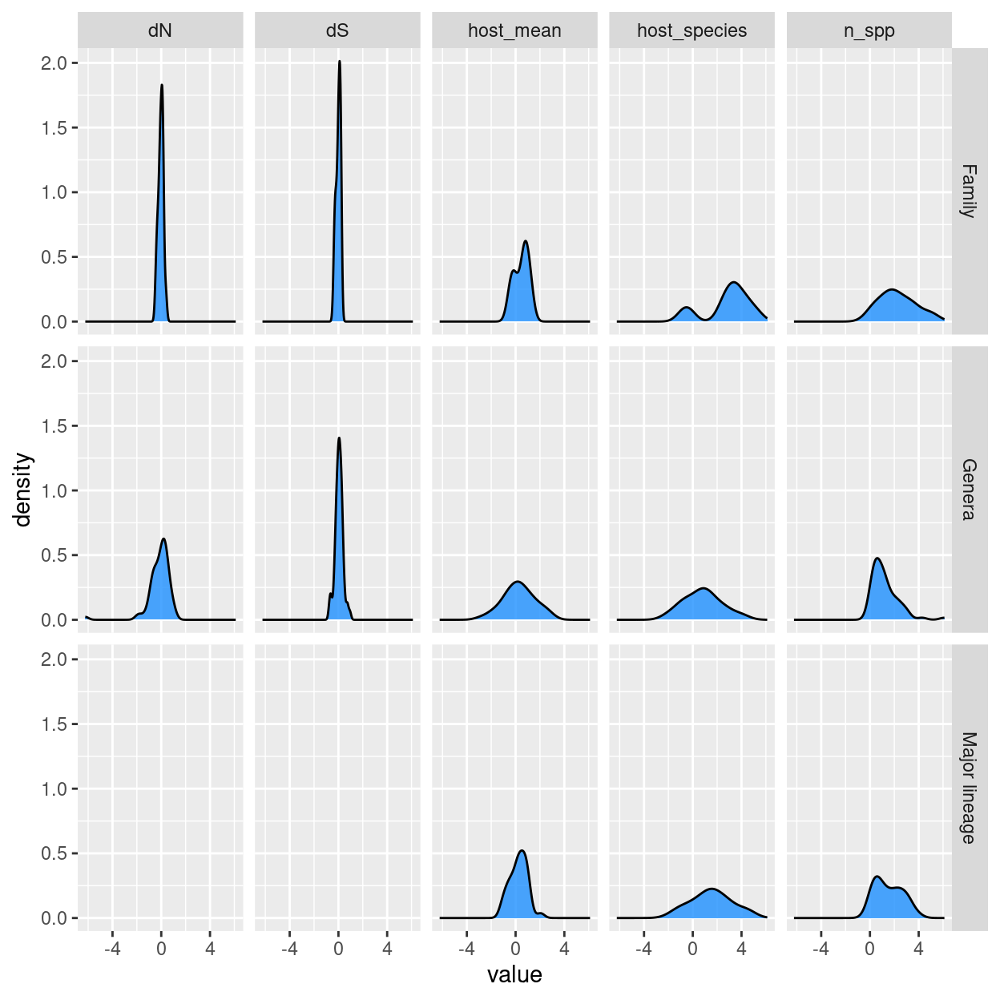

flowchart TB
A2[dS] -- pos --> B2[dN]
B2 -- pos --> C2[clade_size]
D2[mean_hosts] ~~~ C2
E2[host_species] ~~~ C2
D2 ~~~ E2
Analysis plan for Lepidoptera rates and diversity project
Overview:
- I propose a path analysis for each of the genera, family, and major lineage level datasets to simultaneously test:
- The direction of the relationship between mutation and speciation
- mode of speciation (osculate, musical chairs, escape and radiate)
- If results differ for each dataset, we will learn about overarching and proximal drivers of diversification (genera, major lineage, family levels)
- Key changes in my plan include:
- Reducing host variables to
host_species(the number of host species) andhosts_mean(the mean number of hosts)
- Reducing host variables to
Why reduce host variables?
host_species,host_families, andmean_hostsare too correlated. ‘Multicolinearity’ is a weakness of path analysis and it will prevent convergence in estimation.host_familiescould substitute for host_species, but it is necessarily a function ofhost_species(host_families\(>=\)host_species), so it would be extremely cumbersome to include both at once here. The escape and radiate model was the basis of includinghost_families, however I think we could recover a similar signal withhost_species
- Likewise, there are too many measures of generalism which will introduce the same issued. I propose we retain
mean_hostsas the key measure of generalism.- Host phylogenetic diversity would be ideal, but contrasts too zero-inflated at the genera level.
- The proportion of generalists in a clade (proportion with \(>=1\) host) is too restrictive. E.g. a Koala is the epitome of specialisation, but would be a generalist here because it eats more than one kind of eucalypt!
The proposed path analysis will relate to each speciation hypothesis as in the following diagram. The plan is for a nicer version of this to become part of a graphical methods in the paper.
flowchart TB
A1[dS] ~~~ B1[dN]
B1 ~~~ C1[clade_size]
D1[mean_hosts] ~~~ C1
E1[host_species] -- pos --> C1
D1 ~~~ E1
flowchart TB
A3[dS] ~~~ B3[dN]
B3 ~~~ C3[clade_size]
D3[mean_hosts] -- neg --> C3
E3[host_species] -- pos --> C3
D3 ~~~ E3
flowchart TB
A4[dS] ~~~ B4[dN]
B4 ~~~ C4[clade_size]
D4[mean_hosts] -- pos --> C4
E4[host_species] -- pos --> C4
D4 ~~~ E4
In the following, I include examples of what the results figues will look like with dummy data, and assess normality in the chosen (\(\log\)-transformed) variables to support path analysis (Or maybe poisson regression, Xia?).
Example results figure
The key results figure will look like the following (random data presented). I think a heatmap would be a simpler solution too.

Normality of the chosen variables
Here I include what would become a supplementary figure assessing normality for the variables of choice. NB, this is using Andrew’s original data. Some counts, such as host species, will change slightly when we revise the counting scheme (as per discussion with Lindell).

host_species in the Family dataset may be an exception. n_spp is the same as the clade_size variable above